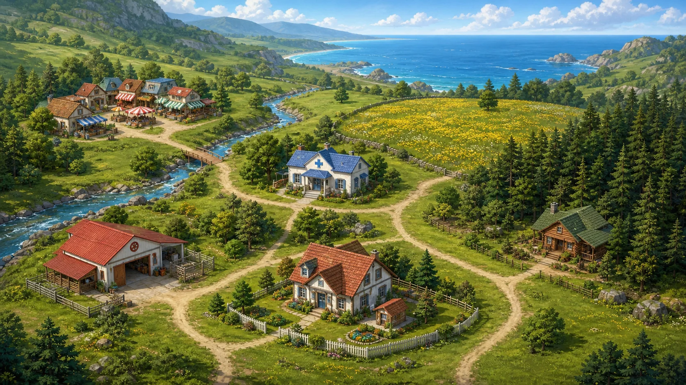
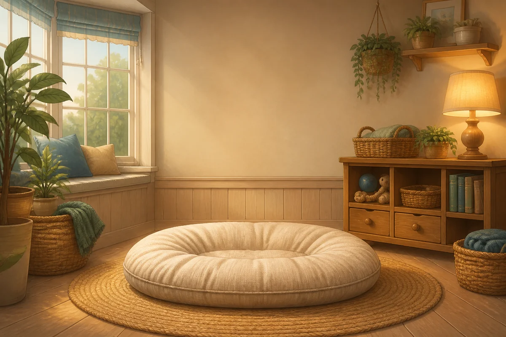
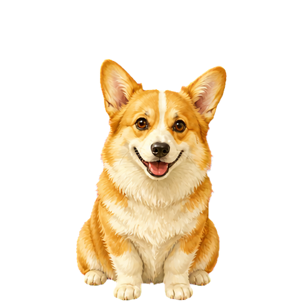
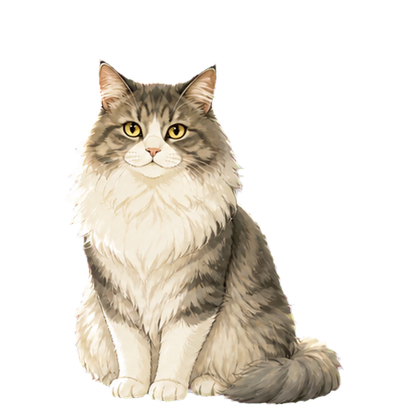

天气晴朗适合外出巡访
山谷正在醒来
今天去哪里？
救助站门口有一只纸箱。你可以先回家喂奶糖，也可以先去听听那只垂耳兔。
山谷昼景 · 森林、湖畔与各地点总览新任照管员累计口碑 5 / 10

生活区
动物家园
日常照料开放

它在等你安排今天的活动。
正在休息0 分钟
1 / 3

山谷正在醒来
救助站门口有一只纸箱。你可以先回家喂奶糖，也可以先去听听那只垂耳兔。
山谷昼景 · 森林、湖畔与各地点总览
生活区


凉爽，适合健康检查